Microservices & Event-Driven Architecture
Personal study notes — from mental model and decomposition through communication, data ownership, sagas, and consistency.
What actually are microservices?
What are microservices?
A service that is Independently deployable, Owns its own data, Aligned to a business capability, and Owned by a single team.
What does independently deployable mean?
Can one service be deployed without needing to redeploy another service.
What does it mean by Owns its data?
One service maintains strict ownership of its databases and does not rely on others for working.
What does it mean by business capability?
Does the service represent a real business function.
What does owned by a single team mean?
Each service is expected to be owned by a single team.
What microservices do not mean?
Does microservices mean small services?
No, a microservice can have either 50000 lines of code(well designed) or 200.
Does microservices mean Docker and Kubernetes?
No, these are deployment tools can run both microservices or monoliths as well.
Does microservices mean splitting code into separate repos?
No, separate repos don’t create separate service boundaries, you can have multiple repos that are still tightly coupled and must be deployed together.
Does microservices mean one microservice per database table?
No, decomposing by database table leads to chatty services; business-capability not database schema is the correct paradigm.
What are the core promises of microservices?
Independently deploy scale and own.
1. Microservices are independently deployed.
Each service can be built, tested and deployed without external coordination.
2. Independent Scaling.
Each service scales its own load without consideration for scaling for other services.
3. Independent Ownership.
Each service is owned by one team → the code, the data, the on-call rotation, the deployment pipeline.
What are the core costs of microservices?
Microservices come at a cost → Distributed Complexity.
What is the problem with Distributed complexity?
1. Network Latency → 1-10ms of round trip
2. Partial Failure → one service can fail while the one prior to it succeeds
3. Data Inconsistency → 2 services can temporarily disagree.
4. Debugging complexity → need to deal with multiple services and logs unlike monolith where you have one logs file and stack trace.
5. Operational overhead → n services means n deployment overheads that need to be monitored.
What is the availability math from monolith to microservices related to downtime?
If one Monolith promises 99.9% availability with 8.76 hours of downtime.
Then each new microservices changes the math likewise,
- 99.92%= 99.80% → 17h31min
- 99.93%=99.70% → 26h17min
- 99.94%=99.60% → 35h2min
- 99.95%= 99.5% → 43h48min
. - .
- .
For each microservice (at 99.9% availability) added to the request chain, downtime increases by ~8 hours 46 minutes per year.
Chain of 2:
Request → [Auth Service] → [Order Service] → response
Downtime → 17h 31min
Chain of 3:
Request → [Auth Service] → [Fraud Service] → [Order Service] → response
Downtime → 26h17min
What is convoys law?
Microservices are an organizational pattern.
"Organizations design systems that mirror their own communication structure.”
Monoliths to Microservices
What are the strengths of a monolith?
- Simplicity of Operations
- Full ACID operations
- Fast iteration Speed
- Real world proof
- Interview Tip
- Interview Relevance
What is a modular monolith?
It is a monolith with enforced internal boundaries.
Deploys as a single unit but organized into distinct modules that communicate via well-defined interfaces.
{kind=link}
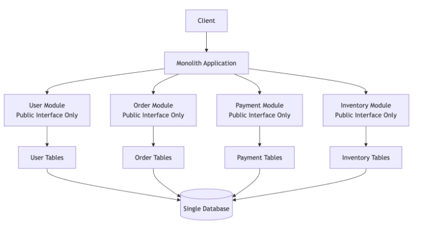
Compared to regular monolith
{kind=link}
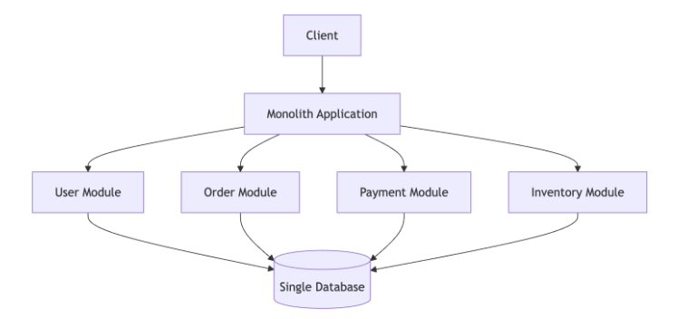
Why Modular Monoliths matter?
They give the boundary discipline of microservice without the operational cost of distribution.
How to make a modular monolith?
BY enforcing coding standards.
What are some enforcement mechanisms?
- Package level access control
- Architecture Tests
- Code review discipline
What is the worst form of monolith → Distributed monolith ?
Full price of microservices and still not independently deployable.
How to detect distributed monolths?
1. Shared Datatabses
2. Cordinated Deployments
3. Circular dependencies
4. Chatty communication
5. Cross-service ownership
6. Shared databases
{kind=link}
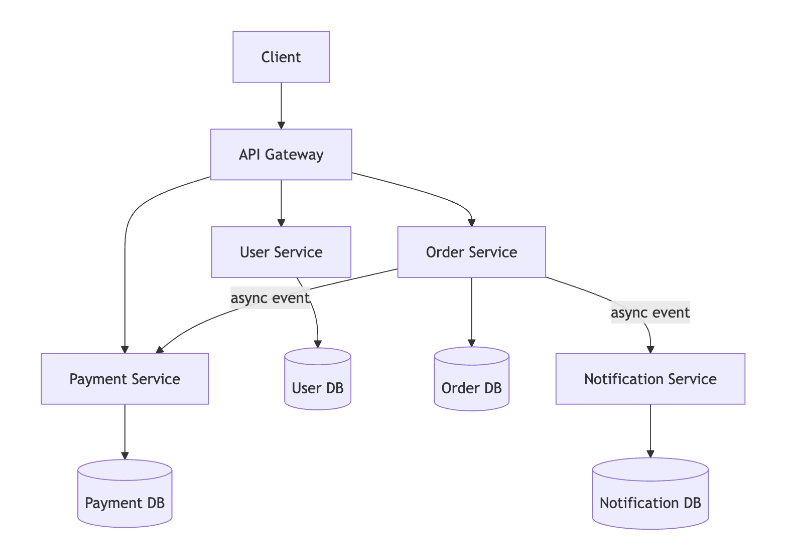
What is a true microservice Architecture?
It is defined independence between services.
{kind=link}
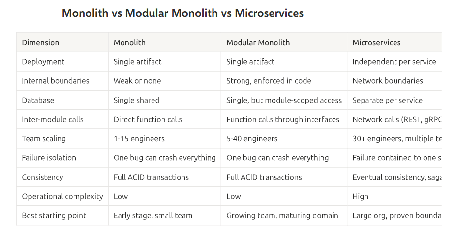
Note that the distributed monolith is intentionally excluded from this table. It is not a valid architectural choice.It is an anti-pattern that happens when microservices are adopted without the discipline of data ownership and independent deployment.
When monolith beats microservices?
- Small team early product
- Unclear domain boundaries
- Strong consistency requirements everywhere
- Uniform scaling profile
When justified to use microservices?
- Multiple teams need to ship independently
- Different parts of the system scale differently.
- Domain boundaries are well understood and stable.
- Fault isolation is critical
What does the migration path from monolith to microservices look like?
It is a staged migration that happens incrementally over months and years.
Stage1 → Monolith to modular monolith
Stage2 → Modular monolith to first extraction
Stage3 → Incremental Extraction
What is the strangler fig pattern?
Incrementally migrating to microservices without a big bang rewrite.
What are the steps of migration in a strangler-fig pattern?
1. establishing a routing proxy to the extracted microservice.
2. Shadow traffic to both the microservice and its equivalent component in the monolith.
3. Canary rollout like 1% of the traffic then 25% and increasing likewise.
4. once at 100% decommission the old payment code.
What are some common decomposition anti-pattern?
1. Splitting by technical Layer→ Frontend , business logic and Database each one service.
2. One service per DB table → prefer decomposition by business capabilities.
3. Premature extraction → extracting before the domain is understood.
4. The “god services” → One service accumulates multiple business domain logic.
5. Shared DB → Multiple Services share the same DB.
What is the number 1 skill to be taken away from this course?
Decomposing services
What is the most reliable way to decompose ?
By business capability.
What is a key test to identify decomposition is good or bad?
Does changing ne capability lead to change in another.
What is DDD?
Building software by modelling everything around business domain → the real world problem and the language business actually uses instead of the technical stuff (DB, frameworks, layer).
What are the Domain Driven Design concepts ?
1. Ubiquitous language. → use the business language in code.
2. Bounded Context. → Bound the context in which the words are defined.
3. Aggregates. → Cluster of related entities that are treated as a single entity as data changes.
What is a bounded context ?
It is a boundary within which one term has one specific unambiguous meaning.
Bounded context == Microservices
own model, own DB, own definition of terms.What is an aggregate ?
An aggregate is a cluster of related domain objects that must be changed together to maintain consistency. The aggregate is the unit of transaction within a service.
What is cohesion?
Cohesion measures how strongly related the responsibilities within a service are. High cohesion means everything inside the service serves a single, focused purpose. Low cohesion means the service is a grab bag of unrelated functionality.
What is coupling ?
Coupling measures how much one service depends on another. Low coupling means services can change independently. High coupling means a change in one service forces changes in others.
What are the different types of Coupling?
1. Database Coupling(Worst) → 2 services read and write from the same table.
2. Implementation Coupling → Service A depends on the internal implementation of service B.
3. Temporal Coupling → Service A can only work when service B is available at the same time.
4. Contract Coupling(most acceptable)→ Service A depends on the public Contract API of service B.
Is 0 coupling the goal?
Services need to communicate foal is not to push for 0 coupling rather move away from database and implementation to contract coupling.
How to take service boundary decisions?
A simple question does this decision reduce coupling and increase cohesion or not.
When to keep things together or merge ?
- Two components change for the same business reason.
- The two components share the same data and splitting would require complex data synchronization.
- Owned by same team and no reason to separate.
When to split things apart?
- 2 components change for completely different business reasons.
- They scale differently
- Failure in 1 does not affect the other.
- They have different storage needs.
How many teams should manage a single service?
1 service owned by one team.
But one team can own multiple services.
Owning teams own the API contract.
NO service has zero owners.
What if the service is too large?
“mini-monolith”
What if the service is too small ?
It becomes a nano-service.
What is the right size? Can be owned by a team of size 4-8 engineers,
If less than 3 DB tables too small and more than 15 DB tables too big.
How many ways service boundaries can be identified?
- By Decomposing workflows.
- BY decomposing by read-write patterns.
Why 1 service per DB table fails?
1. No cohesion
2. Chatty communication
3. Wrong consistency boundary
What Service boundary anti-patterns to avoid?
1. Circular dependencies.
2. The “just one more call” chain .
3. Anemic services.
4. Shared business logic libraries
5. DB Table == Service6. God service
What are some boundary discovery techniques?
1. Event storming.
2. Start with atomic transaction boundaries.
3. Identify what changes together.
4. Follow the team structure
Define a Decomposition Decision framework ?
Split services when;
- Different teams own them and have different release cadences.
- They have different scaling requirements. (10x+ difference in load)
- They change for different business reasons.
- A failure in 1 does not affect the other.
- They use different storage technologies
- They have different compliance or security requirements.
Keep them together when;
- They always change together for the same business reason
- Splitting would require synchronous calls between then for most perations
- They are owned by the same team with no foreseeable organizational split.
- One cannot do anything useful without the other.
What are some validation tests for the same?
1. Independence test – deploy without coordination with other services
2. Cohesion test – Describe each service’s prupose without “and”.
3. Coupling test – Does change in 1 service require change in other.
What are the 2 types of communication patterns in microservices?
1. Synchronous Communication → temporal coupling
2. Asynchronous Communication → loose immediate feedback
Different types of Communication protocols?
1. REST
2. gRPC
3. GraphQL
What are the drawbacks of the REST protocol(default for public facing APIs)?
- Over-fetching
- Chattiness
- No Streaming
- Text-based overhead
What is the difference between HTTP/1.1 and HTTP/2 ?
1. Multiplexing
2. header compression
3. text vs binary format for data being sent
What is gRPC?
Serializes with Protocol buffers → Protobuf and then uses HTTP/2 for transport.
targeted at internal service to service communication.
What are the benefits of gRPC?
- High throughput low-latency communication
- Strongly typed contracts where compile time garuntees the request and response structures.
- Streaming use cases.
What is bad about gRPC?
Harder to debug binary and not human readable.
What is GRAPhQL?
It is the query language for the Clients to specify what they want. Not a replacement for REST or gRPC, serves a different purpose.
When to use GraphQL?
- Client facing APIs where different clients need different subsets of the same data.
- Aggregation layers that combine data from multiple backend services into one client response.
- Situations where over-fetching or under-fetching from REST APIs causes performance problems on the client side.
Where does GraphQL fit in a microservice arhcitectrue?
It works best on the edge layer, not as a service to service protocol.
A GraohQL gateway sits between clients and backend microservices. It translates client querries into calls to the appropriate backend services(which use REST or gRPC internally) and assembles the response.
What risks does GraphQL carry ?
- Complex querries can trigger expensive join operations
- GraphQL gateway becomes a god gateway.
- Caching is harder than REST because every query can be unique
{kind=link}
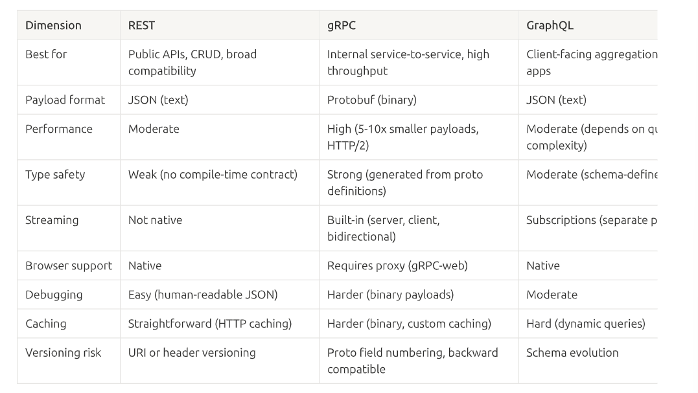
{kind=link}
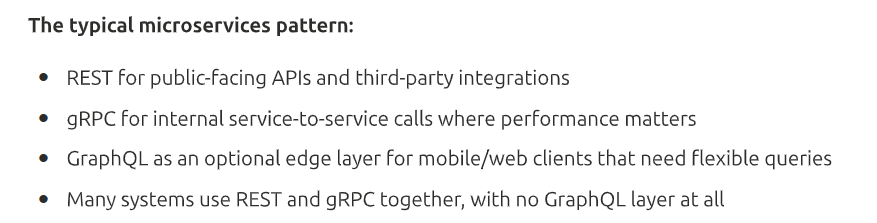
What are message queues?
An MQ is a buffer between a producer and a consumer. The producer puts a message on the queue and moves on. The consumer picking it up when ready.
{kind=link}
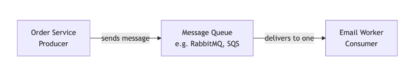
When to use MQs?
- Background processing.
- Load leveling.
- Decoupling
Commands vs events?
Commands→ Do this → when you need a specific output from a service.
Event → This happened → notify the system that something happened.
{kind=link}
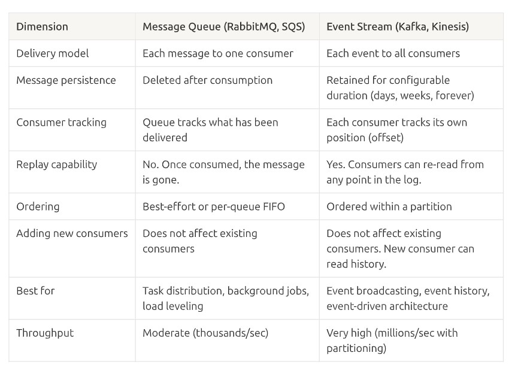
When to use queues?
One consumer should process each message directed at singular consumers.
When to use Event Streams?
Multiple consumers need the same event with replay.
What is the need for timeouts?
Without timeouts services end up waiting for each other forever waiting on resources.
What about retrying with idempotency?
Retry with exponential back off + jitter and use idempotency to avoid creating duplicate downstream effects.
What is a Circuit breaker ?
{kind=link}
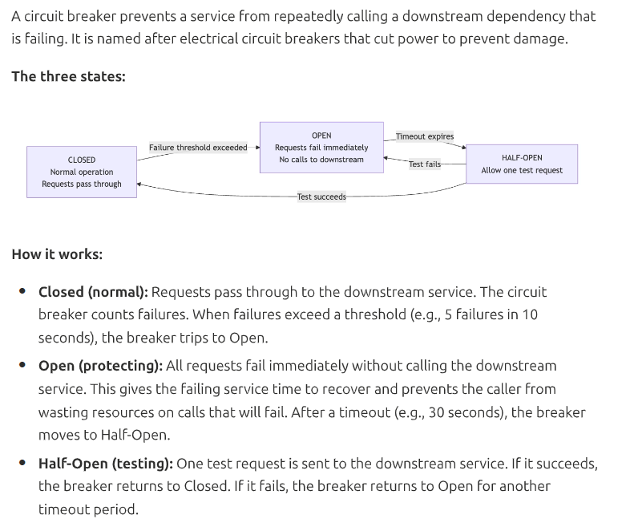
What are bulkheads?
Named after the water tight compartments in a ship’s hull. If one compartment floods, the others stay dry. In microservices, bulkheads isolate failure domains so that a problem with one dependency does not exhaust resources needed for other operations.
Giving each service its own thread pool so that it does not consume the pool of other services.
What are backpressure?
When a service receives more data than it can handle.
How to handle backpressure?
- Return HTTP429 too many requests.
- Use bounded queues to reject messages instead of growing unbounded until memory runs out.
- Implement rate limiting per caller so one noisy client cannot starve others.
{kind=link}
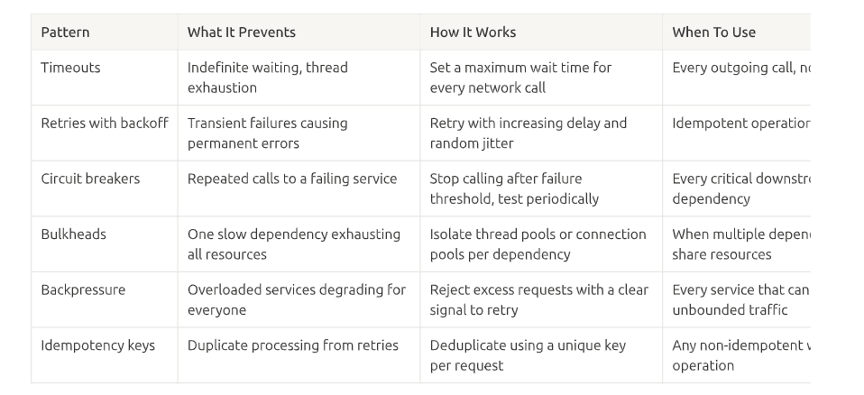
What are the key resilience patterns to memorize?
- Timeouts
- Retries
- Circuit Breakers
- Bulkheads
- Backpressure
- Idempotency keys
What is the backward compatibility rule ?
Version2 of a service must work with the version 1 of another service without breaking backward compatibility.
What are the different versioning strategies in REST?
- URI versioning
- Header versioning
- Backward compatible evolution
What is schema evolution ?
For events schema → avro
Who does consumer driven Contract testing?
Pact is the most widely used consumer-driven contract testing framework.
What are correlation IDs and how does request tracing ?
The API gateway generates a unique correlation ID(e.g. UUID) for every incoming request. This ID is passed to every downstream service in the request headers. Every service includes the correlation ID in all of its log entries for that request.
What are the implementation requirements?
- API gateway generates the correlation ID.
- Every service reads the correlation ID from incoming headers and includes it in all outgoing calls.
- Every log entry includes the correlation ID as a structured field.
- A log aggregation system (ELK stack or Datadog) lets you search by correlation ID>
Deciding on the communication pattern Decision framework?
Step1:- Does the caller need response to continue?
Yes→ synchronous
No → asynchronous
Step2:- if synchronous, which protocol?
- External clients. → REST
- Internal service to service with tight latency budget. → gRPC
- Client needs flexible field selection across multiple backend services → GraphQL.
Step3:- If asynchronous, queue or steam?
- Only 1 consumer should process each message. → MQ.
- Multiple consumers need the same event. → Event Stream.
- You need event replay ability. → Event Stream.
Step4:- What resellience patterns does this call need?
- Every synchronous call: timeout + circuit breaker + bulkhead
- Every retriable call : exponenetial backoff + jitter + idempotency key
- Every service : backpressure when overloaded
Discussing Data ownership and read models
Every service must own its DB.
Service A can only read or write to A DB.
NO other service can connect to A DB.
NO other service knows the A DB schema
If B needs A data it calls the A API not the A DB.
Different DBs are chosen as per the service requirements.
What are the 3 levels of Database coupling?
1. Same table, same schema
2. Same Database, different tables
3. Same instance, different Schemas
What is the ownership rule for the Data for a service?
A service owns the data it is the system record for. The service that creates and modifies a piece of data owns it. Other services can have copis, but only one service is the authoritative source of truth.
What the owning service must provide?
- API for other services to query the data they need.
- Events published upon data changes so other services can maintiain their own copies.
- A contract versioned and backward compatible so consumers are not broken by internal changes.
What the owning service must protect ?
No direct DB access from other services.
NO exposing internal schema details in the API.
NO allowing other services to bypass the API
What is API Composition?
When a client needs data from multiple services, you compose the response by calling each service and combining the results.
{kind=link}
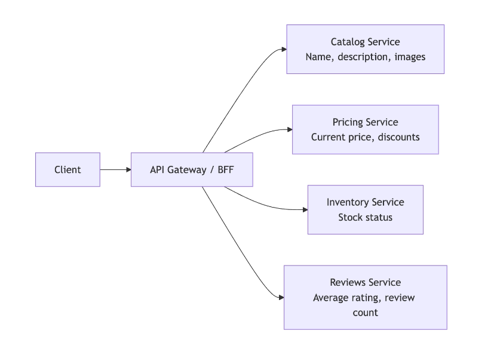
When API Composition works well?
- Fresh data is needed in real time.
- The number of services to call is small (2-4 calls)
- The downstream services are fast and reliable.
- The call pattern is simple.
When API compsotion breaks down?
- Too Many calls.
- Data needs joining.
- High Volume.
When to use materialized views?
When API Composition is too slow too fragile or requires joining data across services, a materialized view provides an alternative.
{kind=link}
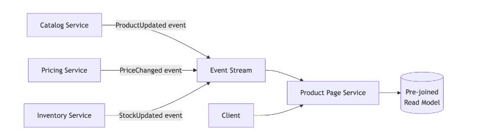
What are the trade-offs?
- Reads are fast
- Reads are resilient
- Data is eventually consistent
- Storage is duplicated.
When to use materialized views?
- Read volume is higher.
- Need data from 3+ services combined in a single query.
- Latency requirements are strict and fan-out adds too much delay.
- Slight staleness(seconds) is acceptable.
What are cross-service writes?
Reading data across services is solved by API Composition or materialized views.
Writitint is difficult because you need to make updates in multiple dataabases
How to perform cross-service writes ?
1. Synchronous orchestration → Central coordinator calls each service in sequence and handles failures by calling compensating actions.
2. Event-driven choreography → Each service publishes an event when it completes its step.
3. Avoid cross-service write entirely → redesign the boundaries so that the data that must change together lives in the same service.
How is data duplication used in microservices?
Duplicate the same data in multiple services in multiple tables
Eventually consistency is practiced to ensure the data is eventually consistent across services.
When eventual consistency is not acceptable?
- Financial transactions.
- Inventory checks.
- Security-sensitive operations.
This is the classic "why don't I see my own change?!" problem. Let me unpack the whole slide.
The problem: your own write looks like it failed
Remember: for scale, writes go to the primary DB, but reads are served from replicas or caches (because reads ≫ writes). Replicas lag behind the primary by a moment (replication lag = eventual consistency), and caches can be stale.
So this happens:
- User changes their name "John" → "Jonathan" (write)
- User Service writes to the primary DB ✅
- User immediately opens their profile page
- That page reads from a replica/cache that still says "John" (hasn't caught up)
- User sees "John" → thinks the update failed → resubmits, files a bug, loses trust
Why this is "the most noticed" consistency problem: eventual consistency is usually invisible — you don't know or care that someone else's data is 2 seconds stale. But when it's your own change that doesn't show up, it's glaringly obvious and feels broken.
The insight: only the writer needs strong consistency
Here's the clever bit. You don't need to make all reads strongly consistent (that would destroy your read-scaling). You only need the one person who just wrote to see their change. Everyone else can keep reading stale-for-a-moment data and never notice.
So the fix: after a user writes, route that user's reads to the primary for a short window. Everyone else keeps hitting replicas.
The code, annotated
def update_profile(user_id, new_name):primary_db.update_user(user_id, name=new_name) # 1. write to primary
cache.set(f"recent_write:{user_id}", True, ttl=5) # 2. flag "this user just wrote" for 5s
def get_profile(user_id, requesting_user_id):# Is the reader the SAME person who just wrote, and still inside the 5s window?
if requesting_user_id == user_id and cache.get(f"recent_write:{user_id}"):
return primary_db.get_user(user_id) # → YES: read PRIMARY (strong, fresh)
return replica_db.get_user(user_id) # → NO: read REPLICA (fast, maybe-stale)Trace it:
- The writer, for 5 seconds, reads from primary → sees "Jonathan" instantly. ✅
- Everyone else reads from the replica → may see "John" for a moment → but they don't know or care. ✅
- After 5s, the replica has caught up and the flag expires → the writer goes back to the replica too (which now shows "Jonathan"). ✅
The trade-off it nails 🎯
You keep replica/cache performance for ~99.9% of reads (all other users + the writer after 5s), while guaranteeing the writer sees their own change immediately. You spend "expensive" strong-consistency reads only on the tiny slice that actually needs it — the writer's own view, for a few seconds.
Bonus: it's a named guarantee (and there's a more robust variant)
"Read-your-writes" is one of the formal session consistency guarantees (siblings: monotonic reads, consistent prefix). The slide shows the simple TTL-flag approach. A more precise variant used in practice: after a write, hand the client a version/timestamp token (LSN); subsequent reads pass that token and are served only from a replica that has caught up to that version (else fall back to primary). That avoids guessing a fixed "5 seconds."
Why the slide flags it for interviews
Saying "I'd use read-your-writes consistency — route the writer's reads to the primary for a short window, everyone else stays on replicas" proves you think about consistency as a spectrum you apply surgically, not just a binary "strong vs eventual." That's a senior signal.
TL;DR: With replicas/caches, a user can write and then immediately read stale data (from a lagging replica) and think it failed. Read-your-writes fixes it by sending that specific user's reads to the primary for a few seconds after they write — so they see their own change instantly — while everyone else keeps reading fast replicas. Strong consistency only where it's noticed. 👍
We went deep on CQRS earlier, so I'll keep this tight and anchor it to this slide's specific wording — especially its Order-history example (which is different from the DoorDash one I used before).
The definition, decoded
CQRS separates the write model (commands) from the read model (queries) into different data stores, each optimized for its access pattern.
- Command = a write (create/update/delete).
- Query = a read.
- The point: stop forcing one store to be good at both. Build two.
The "why": writes and reads want opposite things
| Write side (commands) | Read side (queries) | |
|---|---|---|
| Needs | normalization, constraints, ACID | denormalization, pre-computed aggregations, fast lookups |
| Goal | correctness | speed |
If one model does both, you compromise both. CQRS says: don't compromise — optimize each separately.
This slide's anchor: the Order-history page
Write model — orders stored normalized across 4 tables: orders, order_items, shipping_addresses, payment_records, with foreign keys + referential integrity + business rules. Perfect for creating an order correctly.
Read model — a denormalized summary document per order: {orderID, customerName, total, itemCount, status, lastUpdated}. Perfect for displaying the history page.
The concrete difference:
| Without CQRS | With CQRS | |
|---|---|---|
| History page query | SELECT … JOIN order_items JOIN shipping_addresses JOIN payment_records — 4-table join every page load | SELECT * FROM order_summaries WHERE user_id = X — one lookup, no joins |
| At millions of reads | slow + hammers the write DB | fast + isolated |
The two stay in sync via events: the write side publishes, the read side rebuilds its summary document. (That sync = eventual consistency.)
When it's justified vs overkill (the part interviewers test)
✅ Justified:
- Read vs write volume differ 10x+
- Read side needs a different DB tech (write → PostgreSQL, read → Elasticsearch)
- Different consumers need different shapes (mobile → summary, admin → full detail)
❌ Overkill:
- Read/write patterns similar (basic CRUD, similar volume)
- One DB handles both fine
- The two-model + event-sync complexity isn't worth the gain
The slide's key line: CQRS is "expected to know but also justify." Proposing it for simple CRUD = over-engineering red flag. Proposing it for a high-read, complex-query system = strong design sense.
🔗 Connection to the slide you just read (75)
This is neat: CQRS is exactly what causes the read-your-writes problem. The read model (summary store) lags the write model, synced by events. So right after a user places/edits an order, the summary might not be updated yet → they don't see their change → that's the read-your-writes trap from Slide 75. CQRS gives you fast reads; read-your-writes consistency is how you paper over its one UX downside.
TL;DR: Slide 76 = split your data into a normalized write model (correctness) and a denormalized read model (speed), synced by events. The Order-history example: create orders across 4 normalized tables, but read them from a one-document summary (no joins). Use it when reads and writes are genuinely different beasts (10x volume, different tech/shapes) — not for plain CRUD, or you'll look like you're over-engineering. 👍
Good one — this slide is the "how do you actually build the read model" slide. It connects straight to the CQRS we just did. Let me unpack it.
First, the word "materialized"
In SQL:
- A regular view = a saved query that re-runs every time you read it (computed on-the-fly, always fresh, but slow).
- A materialized view = the query's results are physically stored — pre-computed once and kept around, so reads are instant (but need refreshing).
"Materialized" literally means "made physical / stored." Hold that — it's the whole idea.
The core problem it solves
Remember database-per-service: each service owns its own DB, and you cannot JOIN across services (the tables live in different databases owned by different teams). So how do you serve a page like Order History that needs data from 4 services (Order, Product, User, Payment)?
Two options:
| API Composition (Slide 70) | Materialized View (Slide 77) | |
|---|---|---|
| How | at request time, call all 4 services and stitch | pre-build a combined view via events, store it |
| Reads | many runtime cross-service calls | one local query, zero cross-service calls |
| Downside | slow, fragile (any service down → page fails) | storage + eventual consistency |
| At scale | struggles | the go-to |
A materialized view = a pre-joined, pre-computed, denormalized read model, kept fresh by events, so reads are ONE local lookup instead of a runtime fan-out.
🍱 Analogy: API composition = cooking a meal from scratch every time an order comes in (call 4 suppliers right now). Materialized view = meal-prepped dishes in the fridge, replenished as ingredients arrive — serve instantly.
How it's built (the slide's Order-History example)
Event-driven. The source services publish events when their data changes, and a consumer builds the view in its own database:
- Order Service → OrderCreated, StatusChanged → gives OrderID, status, created date
- User Service → UserUpdated → gives customer name, email
- Payment Service → PaymentCompleted → gives payment status, method
- Catalog/Pricing → gives product names + prices (snapshotted at purchase time)
The consumer folds all of it into one denormalized document per order. When a user opens their history → one query to the view's local store → everything's there. No cross-service calls.
⚠️ The snapshot nuance
Product names/prices are "snapshotted when the order was created." Order history must show the price at time of purchase, not today's price. So the view freezes the value from the event — it does not keep tracking later changes. (This is the "snapshot at event time" pattern, Slide 78.)
Keeping it fresh (the reliability part)
- View updates as events arrive — continuously.
- Missed/failed event? The consumer replays from its last known offset in the event stream. (This is why you use a durable event stream like Kafka — events are retained, so you can rewind and reprocess. A transient queue couldn't do this.)
- Periodic full rebuilds — re-run everything from scratch to catch any drift.
The costs (honest trade-offs)
- Storage duplication — the data now lives in the source service and in the view. You trade storage for read speed.
- Processing overhead — constantly consuming events + updating the view.
- Eventual consistency — the view lags the source by ms–seconds. (← this is exactly the read-your-writes lag from Slide 75!)
- Complexity — event schemas must be versioned (schema evolution), and consumers must handle out-of-order / duplicate events (→ idempotency).
🔗 How it ties to what you just learned
- Slide 76 (CQRS): the "read model" is a materialized view. Slide 77 is how you actually build and maintain that read model for cross-service data.
- Slide 75 (read-your-writes): the view lags the source → the writer might not see their change immediately → that's the same eventual-consistency UX trap.
So the three slides are one story: CQRS says split read/write → Materialized views are how you build the read side across services → Read-your-writes is how you handle the lag.
TL;DR: A materialized view = a pre-computed, denormalized, physically-stored read model that a service builds by consuming events from other services — so a query needing 4 services' data becomes one local lookup, no runtime cross-service calls. You pay with storage duplication + eventual consistency (ms–sec lag), and you keep it fresh via event replay from offsets + periodic rebuilds. It's the go-to for cross-service reads at scale. 👍
This slide is genuinely one of the most practical in the whole course — it answers the core Section 5 question: "each service owns its own DB, so how does a service get data it doesn't own?" The answer: it depends on how fresh the data needs to be. That freshness requirement picks the pattern.
What "reference data" is
Data that many services need but only ONE service owns — product names, user profiles, currency codes, country lists, pricing tiers. The owner is the source of truth; everyone else needs a strategy to access it without creating a mess.
The key insight
The right pattern is chosen by the consumer's freshness need — not by the data itself. Same piece of data (a price) might be snapshotted in one place and sync-called in another. Three patterns, three freshness levels:
Pattern 1: Snapshot at event time → frozen forever
What: copy the value at a moment and freeze it — never update it.
Slide's example: Order Service copies product name + price at purchase time into its own order record. If the product later goes $10 → $12, the order still shows $10.
Why: here you don't want to stay current — staying current would be wrong (it'd rewrite history). The customer paid $10; the record must say $10 forever.
More examples: invoice line items, contract terms at signing, the shipping address used for a past order (even after the user moves), tax rate applied at purchase.
Use when: the data must reflect a point in time.
Pattern 2: Event-driven local cache → eventually fresh
What: keep a local copy, updated via events from the owner. Read your local copy, don't call the owner each time.
Slide's example: Notification Service consumes UserUpdated events and keeps a local userID → email table. To send an email, it reads its local table — never calls User Service.
Why: calling User Service on every email would be chatty and break notifications if User Service is down. A local cache decouples you. And seconds of lag is harmless — if someone changes their email at 12:00:00 and a mail goes to the old address at 12:00:01, that's rare and low-harm.
More examples: currency codes, country lists, pricing tiers, product names for display (this is basically the materialized view from Slide 77).
Use when: data should be roughly current, but seconds of staleness is fine.
Pattern 3: Synchronous API call → always fresh (real-time)
What: call the owning service's API right now, accept the latency + dependency.
Slide's example: Checkout calls Payment Service for the customer's current default payment method at checkout. If it used a stale/cached one (customer just deleted that card), the payment fails.
Why: staleness here causes a real business error, so correctness forces a live call — even though you pay latency and create a runtime dependency (Payment down → checkout blocked).
More examples: current account balance before a withdrawal, live inventory before confirming an order (can't oversell), authorization checks (is this user still allowed?).
Use when: staleness causes business failures.
The decision framework (this is the interview gold)
| Ask this | → Pattern | Freshness |
|---|---|---|
| Must it reflect a point in time? | Snapshot | frozen forever |
| Roughly current, seconds of staleness OK? | Event-driven local cache | eventually fresh |
| Does staleness cause failures? | Synchronous API call | always fresh |
🔗 How these map to what you've learned
- Snapshot → the "product price snapshotted at purchase" from Slide 77, and the Order aggregate storing frozen data.
- Event-driven cache → literally a materialized view / local read model (Slides 71, 77).
- Sync API call → API composition (Slide 70).
So this slide is the unifying decision layer: given cross-service data, these three (snapshot / cached / live) are your toolbox, and freshness is the selector.
Why interviewers love it
Saying "reference data — I'd snapshot it if it's point-in-time, cache it via events if seconds of staleness is fine, or call synchronously if staleness breaks the business" gives a specific, named, decision-driven answer instead of hand-waving "the services just share the data." That's a senior signal.
TL;DR: Reference data = owned by one service, needed by many. Pick the access pattern by freshness need: Snapshot (freeze a point-in-time value, e.g. purchase price), Event-driven local cache (stay roughly current via events, e.g. email for notifications), or Synchronous API call (must be live, e.g. payment method at checkout). The decision tree — point-in-time? / seconds-stale-OK? / staleness-breaks-things? — is the whole game. 👍
{kind=link}
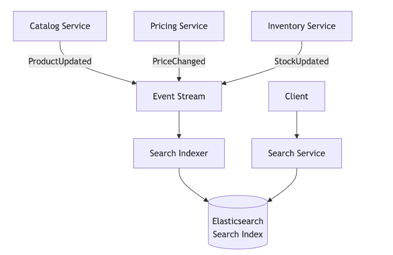
This slide is a killer application of the materialized-view idea (Slide 77) — and it's one of the most common system-design interview topics, so it's worth nailing. Let me break it down.
Why search is fundamentally cross-service
Take the query "red shoes under $50 in stock near me." Look at what each fragment needs:
| Query fragment | Owned by |
|---|---|
| "red shoes" (attributes) | Catalog Service |
| "under $50" (price) | Pricing Service |
| "in stock" (stock levels) | Inventory Service |
| "near me" (warehouse proximity) | Location Service |
No single service owns all of this. And with database-per-service, you can't JOIN across their DBs. So search cannot be answered by any one service — it's inherently a combined view.
Why you can't just API-compose it at query time
Even if you called all 4 services live, a normal relational DB can't efficiently do what search needs: full-text matching ("red shoes"), faceted filtering (brand/size/color), relevance ranking, and geospatial ("near me"). That's a specialized workload. You need a purpose-built engine (Elasticsearch / OpenSearch) holding a denormalized copy of everything searchable.
The pattern: Search Service = a materialized view optimized for search
- A Search Service owns an Elasticsearch/OpenSearch index.
- An indexer process consumes events from all upstream services — ProductUpdated (Catalog), PriceChanged (Pricing), StockUpdated (Inventory), location updates.
- Each index document = a denormalized product record combining all searchable attributes from all those sources.
- Search queries hit the index → one fast, specialized store. No runtime cross-service calls.
It's literally the Slide 77 materialized view — just specialized for search instead of order history.
The ownership nuance (this is the interview point)
The Search Service is a derived read model — it owns the machinery, not the truth:
| Search Service owns | Search Service does NOT own |
|---|---|
| the index | product names (→ Catalog is the authority) |
| the indexer | prices (→ Pricing is the authority) |
| the search API | stock (→ Inventory is the authority) |
So it's downstream — a copy assembled from sources. This matters when an interviewer asks "who owns the data?" → "The Search Service owns the index and API, but it's a derived read model; the source services remain the authorities."
Consistency: browse approximate, confirm authoritative
A price change takes 1–5 seconds to reach the index. That's fine — because:
- Search is for discovery/browsing → approximate info is acceptable. Seeing a price 3 seconds stale in a results list harms nothing.
- The authoritative value is confirmed at the point of commitment → checkout re-reads the real price from the Pricing Service (the source of truth) before charging.
🏬 Analogy: the store's window display / catalog might show a slightly outdated price, but the register rings up the real price. You browse the (maybe-stale) catalog; the authoritative transaction happens at checkout.
This "fast approximate read model for discovery + sync confirm from the authority at commitment" is a hugely important general pattern.
🔗 Connections to what you've learned
- Slide 77 (materialized views): search index = a materialized view, specialized.
- Slide 78 (reference data): search combines two patterns — the indexed price is an event-driven cache (Pattern 2, seconds-stale OK for browsing), but checkout does a synchronous API call (Pattern 3) to confirm. Same data, two patterns, chosen by freshness need at each moment.
- Slide 75 / eventual consistency: the 1–5s lag is eventual consistency — acceptable here by design.
Why interviewers love it
"Search" comes up constantly. Saying "I'd build a Search Service that owns an Elasticsearch index, populated by an indexer consuming events from Catalog/Pricing/Inventory/Location — a derived read model, kept eventually consistent, with the real price confirmed from Pricing at checkout" demonstrates you deeply understand cross-service data patterns, not just "add Elasticsearch."
TL;DR: Search spans multiple services (attributes + price + stock + location), and no one owns it all, so you build a Search Service = a search-optimized materialized view: an Elasticsearch index fed by an indexer consuming events, holding denormalized docs. It's a derived read model — it owns the index/API but not the truth (Catalog/Pricing stay the authorities). Results are eventually consistent (1–5s), which is fine because you confirm the authoritative value from the source at checkout. 👍
This slide is about a deceptively nasty problem — keeping cached copies fresh when the copy and the original live in different services. Let me break it down.
The core question
Caching = keeping a fast local copy of data. But copies go stale when the original changes. In microservices, the copy and the original often sit in different services — so: who is responsible for invalidating (clearing/refreshing) the stale copy?
The golden rule
The service that OWNS the data owns the invalidation logic. If you cache someone else's data, you must follow their signals (events or TTL) to know when your copy is stale.
The three patterns
| Pattern | Cache lives in | Invalidation | Freshness | Complexity |
|---|---|---|---|---|
| 1. Source-owned | the owner (Catalog's Redis) | owner invalidates on write | fresh | low ← default |
| 2. Consumer + TTL | the consumer | time-based (e.g. 60s) | stale up to TTL | low |
| 3. Consumer + event | the consumer | event-driven, immediate | near-fresh | higher |
Pattern 1 — Source-owned (default): Catalog caches its own product data in Redis; on update, Catalog invalidates it. Consumers calling the Catalog API get fresh data automatically — they don't even know a cache exists. Simplest → start here.
Pattern 2 — Consumer + TTL: Order Service caches product names locally (60s TTL) to avoid calling Catalog on every order display. After 60s it re-fetches. Good when slight staleness is fine and you want to reduce dependency on the source.
Pattern 3 — Consumer + event invalidation: Search Service caches product data and consumes ProductUpdated events → invalidates immediately on change. Fresher than TTL, but you pay to consume + process the event stream. (This is exactly the Search Service from Slide 79.)
☠️ The cardinal sin
Service A caches Service B's data — and B has no idea. When B's data changes, A's cache stays stale forever because there's no invalidation mechanism.
Why this is especially evil: the stale data looks correct. It's not an error or a crash — it's plausible, real-looking data that's just outdated. An order page shows "Blue Shirt" when it was renamed "Navy Shirt" — the page works, nobody notices, until someone compares with the source. Silent correctness bugs are the hardest to diagnose.
📇 Analogy: everyone saves your phone number in their contacts. You change it. Source-owned = they all look you up in a shared directory you keep updated. TTL = they re-check the directory monthly. Event = you broadcast "new number!" and they update instantly. Cardinal sin = they copied it once, never re-check, and you never tell anyone → they call the wrong number forever, and it seems to work (it rings someone) until it clearly doesn't.
The famous quote (worth dropping in an interview)
"There are only two hard things in Computer Science: cache invalidation and naming things." — Phil Karlton
Microservices make it even harder because the cache and the source are in different services — no shared memory, so invalidation must be coordinated over the network via events or TTLs.
The interview framing
Always state who owns invalidation.
- ✅ Complete: "The Catalog Service caches product data and invalidates on write."
- ❌ Incomplete: "We cache product data." → leaves the interviewer wondering who keeps it fresh.
🔗 Connections
- Pattern 3 (consumer + event) = Slide 78's event-driven local cache and Slide 79's Search Service. Same family.
- The freshness spectrum mirrors Slide 78's reference-data patterns — TTL vs event vs source-managed is again chosen by how stale you can tolerate.
TL;DR: In microservices, cached copies and their source live in different services, so the rule is: the data owner owns invalidation. Three patterns — source-owned (owner caches + invalidates on write, the default), consumer + TTL (simple, stale up to TTL), and consumer + event invalidation (fresh, but you consume events). The cardinal sin is caching another service's data with no invalidation mechanism → silent, plausible-looking stale-data bugs. In interviews, always say who invalidates. 👍
This is the last big pattern in Section 5, and it's about a clean separation: don't run heavy analytics on your live operational databases. Let me break it down — and I'll show you it's the same event-driven pattern you've now seen three times.
The core distinction: OLTP vs OLAP
| Operational DB (OLTP) | Analytical store (OLAP) | |
|---|---|---|
| Stands for | Online Transaction Processing | Online Analytical Processing |
| Optimized for | fast reads/writes on individual records | aggregating over millions of records |
| Example query | "get order #123" | "sum revenue by category, 90 days" |
| Shape | row-oriented, normalized | column-oriented, denormalized |
| Who uses it | the services / real users | business analysts |
These are fundamentally different workloads. A DB tuned for one is bad at the other.
The problem — two reasons analytics can't run on operational DBs
Take: "Show me total revenue by product category for the last 90 days." It needs order data (Order Service), categories (Catalog Service), and amounts (Payment Service).
- Cross-service: the query spans 3 services, each with its own DB → you can't JOIN across them. You'd have to call 3 APIs and aggregate in code — slow and painful.
- Performance (the bigger one): a heavy aggregation scanning 90 days of data would hammer the operational DB and degrade real-time traffic — you do not want an analyst's report to slow down checkout for actual customers.
The solution: a separate analytical store, fed by events
- Each service publishes domain events → event stream.
- An ETL pipeline / stream processor consumes them and loads them into a centralized analytical store — a data warehouse (BigQuery, Snowflake, Redshift) or data lake.
- The warehouse holds copies of all services' data, restructured for aggregation/joining/trends (columnar, denormalized).
- Analysts query the warehouse directly — they never touch operational DBs.
🧾 Analogy: the operational DB is the cash register (fast individual transactions during the rush). The warehouse is the accountant's copy of all transactions for monthly analysis. You don't run quarterly reports on the live register — you'd jam up the checkout line.
Why this preserves service independence
- Services only publish events — they never build/support reporting APIs (no analytical burden on them).
- The reporting schema is independent of any service's internal schema.
- New reports/dimensions don't require changing any service.
- Heavy queries hit the warehouse, not operational DBs → zero impact on real users.
🔗 The unifying insight (this ties Section 5 together)
This is the same event-driven-derived-store pattern you've now seen three times — just optimized for a different read pattern:
| Slide | Services publish events → | Derived store optimized for |
|---|---|---|
| 77 Materialized view | → order-history read model | app queries |
| 79 Search indexing | → Elasticsearch index | search |
| 81 Reporting | → data warehouse | analytics |
One pattern: don't query across operational services at read time — build a purpose-optimized derived store fed by events. Once you see this, Section 5 collapses into a single idea.
Consistency note
The warehouse is eventually consistent — ETL lags (seconds for streaming, hours for nightly batch). That's fine for analytics — a 90-day revenue report doesn't need millisecond accuracy.
Interview point
Asked about reporting/analytics in microservices, the expected answer is: "a separate analytical store (data warehouse) fed by events." Running analytical queries against operational microservice DBs is a design mistake — name it as such and you signal maturity.
TL;DR: Operational DBs (OLTP) are built for fast per-record transactions; analytics (OLAP) needs to aggregate across tons of data and across services. Don't mix them — a heavy report would span services you can't JOIN and degrade real users. Instead, services publish events → ETL → a data warehouse (BigQuery/Snowflake/Redshift), which analysts query directly. It's the same event-derived-store pattern as materialized views and search, aimed at analytics. 👍
That wraps the core data-sharing patterns of Section 5 (next is 81B "Note It Down" + the decision framework). Want a one-page recap of the whole "cross-service data" toolkit — API composition / materialized view / search index / reference-data patterns / cache patterns / warehouse — since they're all one family? Could be a great md note.
7 data ownership patterns (Section 5 recap)
# Pattern What it does Best for
1 Database per service each service owns its store, no shared DB non-negotiable baseline
2 API composition call multiple services, combine results real-time data from 2–4 services
3 Materialized views pre-compute cross-service data from events high-read cross-service queries
4 CQRS separate write model from read model read/write patterns differ dramatically
5 Event-driven local cache consume events, keep a local copy reference data that must stay current
6 Snapshot at event time capture the value at moment of use point-in-time records (price at purchase)
7 Analytical store central warehouse fed by events reporting & cross-domain analytics
Rule: start with the simplest (API composition) → move to complex (materialized views, CQRS) only when you can name the specific problem the simpler one doesn't solve — too many calls, too much latency, read/write ratio too skewed.
This slide is about how you change a schema without breaking everyone when services deploy independently. The answer is the expand-contract pattern.
The problem
- Monolith: a schema change is one coordinated deploy — all code ships together, compiler catches breaks.
- Microservices: consumers deploy independently. If the Order Service just renames a field in one deploy, every consumer still expecting the old field breaks instantly — because they haven't deployed their update yet. And you can't force a simultaneous deploy (that would kill independent deployment).
So you need a change that's backward-compatible at every moment. That's expand-contract.
Expand-Contract (3 phases)
| Phase | What you do | State of the API |
|---|---|---|
| 1. Expand | Add the new field alongside the old. Populate both. | old + new both present → nothing breaks |
| 2. Migrate | Consumers switch to the new field, one at a time, own pace — no coordination | both still present → each team moves when ready |
| 3. Contract | Once all consumers moved, remove the old field, stop populating it | old gone → safe because no one uses it |
🛣️ Analogy: widening a road without closing it — build the new lane next to the old (expand), gradually route traffic over (migrate), then remove the empty old lane (contract). The road never shuts.
The example (shipping_address → structured)
- Expand: Order API returns both shipping_address (old string) and street / city / state / zip / country (new fields).
- Migrate: Reporting, Shipping, and Analytics each switch to the structured fields, deploying independently.
- Contract: once contract tests confirm no consumer uses shipping_address anymore, Order Service removes it.
Why it takes 2–4 weeks (the key insight)
Not because the technical work is hard — it's a few field additions/removals. It's slow because each consuming team deploys on its own schedule, and you must wait for all of them. This is an organizational timeline, not a technical one (a direct consequence of independent ownership / Conway's Law — you can't make another team deploy now).
🔗 Connections
- Contract testing (Section 4) is the gate for Phase 3 — it tells you it's safe to drop the old field (no consumer still depends on it).
- This is backward compatibility + schema evolution applied to data — exactly the keywords we noted (migration, backwards compatibility, API versioning, schema evolution, contract testing).
TL;DR: You can't big-bang a schema change across independently-deployed services — you'd break consumers that haven't updated. Use expand-contract: add the new field alongside the old (expand) → let consumers migrate at their own pace (migrate) → remove the old field once contract tests confirm it's unused (contract). The API stays backward-compatible throughout, so no coordinated deploy is needed. Slow part is organizational (waiting on other teams), not technical. 👍
Q1 — Read or write?
Write across services → Saga (Section 6)
Read → Q2
Q2 — How many services / how much volume?
1–2 services, low volume → API composition (call their APIs directly)
3+ services, or high volume → Materialized view / CQRS
Q3 — Does it need to be real-time fresh?
Yes, staleness causes business errors (current balance, inventory at checkout) → Synchronous API call to source of truth
No, seconds of staleness OK (search, catalog, dashboards) → Materialized view / event-driven cache
Q4 — Are read & write patterns dramatically different?
Yes (reads 100–1000× writes, or different data shape) → CQRS
No (similar volume/shape) → Single model
Q5 — Is it for reporting/analytics?
Yes → Analytical store (data warehouse) fed by events — never query operational DBs for analytics
Distributed transactions, Sagas and Consistency
There is no ACID guarantee on the distributed microservices
There is ACID guarantee per service DB but not at the whole system level.
What is the 2 phase commit?
It gives us ACID transactions across multiple DB.
Below is an example of 2 phase commit.
{kind=link}
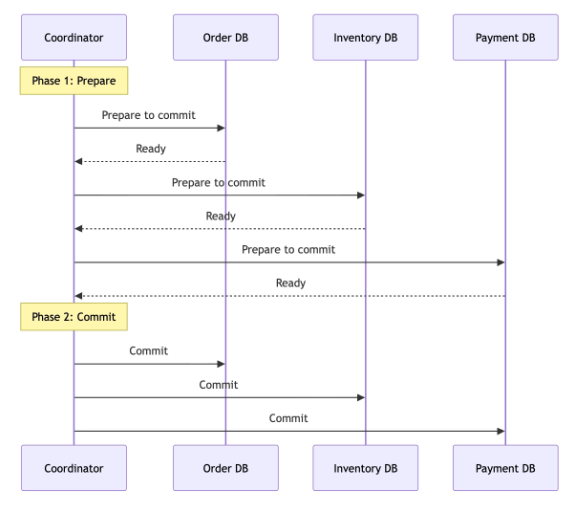
Phase 1(Prepare) :- Coordinator asks each participant “Can you commit this transaction?” Each participant acquires locks, validates the data, and responds “Ready”, or “Abort”.
Pahse2(Commit):- if All the Participants said “Ready” sends commit to all of them . if any participant said “Abort”, the coordinator sends rollback to all of them.
What is the benefit of using this mechanism ?
Either all participants commit or all participants roll back. The transaction is atomic across all databases.
Why is 2PC usually avoided?
2PC → guarantees atomicity but comes at the cost of that makes it impractical for most microservices.
- Blocking and locks.
- Coordinator as a single point of failure.
- Latency
- Reduced availability
What is the distributed transaction problem?
Example,
Order service → order created.
|
|
Inventory service → reserve 2 units of product XYZ.
|
|
Payment service → Authorize $59.98 on the custommer’s credit card.
Points of failure?
1. Order created, Inventory reserved, payment fails. The order exists, Inventory is reserved. But there is no payment. The customer is not charged, but the product is held and unavailable to other customers.
2. Order created, inventory reservation fails(out of stock). The order exists with no inventory backing it. If we proceed to payment, we charge the customer for something we cannot ship.
3. Order created, inventory reserved, payment authorized, then the order service crashes before updating the order statuus to CONFIRMED. The payment was charged, inventory is reserved, but the order shows PENDING. The customer is charged but sees no confirmation.
The pattern…….
Each failure case requires a different recovery action.
The Solution…..
SAGAS
What is the SAGA pattern?
Each transaction will update the one service’s Database. And each transaction has a corresponding compensating transaction that can undo its effect if a later step fails.
What makes a SAGA different?
It does not guarantee atomicity in the ACID sense. It guarantees that the system will eventually reach a consistent state, either by completing all steps or by running compensating transactions for all completed steps.
A DB transaction is all or nothing. A saga is a sequence of committed local transactions . each step commits immediately in its own database. If step3 fails, steps 1 and steps 2 have already committed. You cannot roll them back. You must compensate them.
Why does compensation not rollback?
A DB rollback undoes uncommitted changes as if they never happened. A compensating transaction that semantically reverses the effect of a committed transaction.
Cancelling an order is not rolling back the INSERT. It is creating a new state change: UPDATE order SET status =”CANCELLED”Refunding a payment is not undoing the charge. It is creating a new refund transaction on the customer’s credit card.
What are the 2 implementation approaches ?
1. Orchestration → A central coordinator service tells each participant what to do and handles failures.
2. Choreography → Each service reacts to events from the previous step. No central coordinator.
How does the Saga pattern execute?
{kind=link}
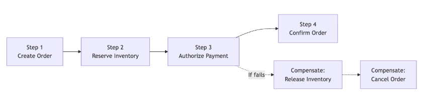
Forward flow(success):Each step executes and commits in its own service database. Step1 commits in the Order DB. Step 2 commits in the inventory DB. Step 3 commits in the Payment DB. Step4 updates the OrderDB to CONFIRMED.
Backward flow(failure at Step3):Payment authorization fails. Steps1 and 2 have already committed( the order exists inventory is reserved). The saga runs compensating transactions in reverse order: release the reserved inventory(compensation step2), then cancel the order(compensation step1).
What each step looks like:
- Step1(Create Order): Insert order with status PENDING. Compensating action: Update order status to CANCELLED.
- Step2(Reserve Inventory):Decrement available stock, increment reserved stock. Compensating action: Increment available stock, decrement reserved stock.
- Step3(Authorize Payment):Call payment gateway to authorize the charge. Compensating action: Call payment gateway to void the authorization.
- Step4(Confirm Order):Update order status to CONFIRMED. NO compensating action needed.
What is a compensating Transaction?
A compensating transaction is a new transaction that semantically reverses the effect of a previously committed transaction. It does not undo the original transaction. It creates a new action that counteracts it.
Why undoing is the wrong mental model?
In a database, ROLLBACK discards uncommitted changes. The data reverts to its previous state as if the transaction never happened. Coompensating transactions canot do this because the original transaction has already been committed. Other services may have already read the committed dtaa and acted on it.
What are the other compensating transactions?
- Create order(status:PENDING) → Compensation : Update order status to CANCELLED. The order record still exists in the DB. It is not deleted.
- Reserve 2 units of inventory → Compensation: release 2 units back to available stock. The reservation record may be kept for auditing.
- Authorize $59.98 payment → Compensation : Void the authorization or refund the charge. The payment record shows both the charge and the reversal.
- Send the confirmation email. → Compensation: there is none. You cannot unsend an email. This is why notification should be the last step in saga, or sent only after the saga is fully confirmed.
Design rules for compensating transactions:
1. Every saga step must have defined compensating action before you implement the saga.
2. Compensating transactions must be idempotent.
3. Some actions are not compensable.
What is the orchestration ?
In orchestration approach, a central coordinator manages the saga by telling each service what to do and handling the results.
{kind=link}
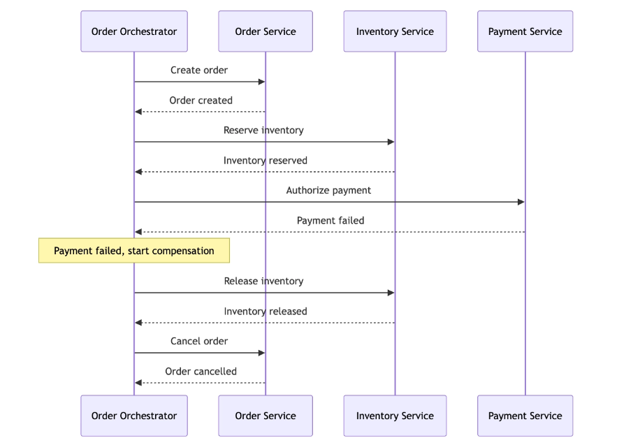
How does the orchestrator work?
The orchestrator holds the sagas state machine. It knows which step to execute next, what to do if a step succeeds, and what compensating actions to trigger if a step fails. It sends commands to each service and waits for responses.
What are the advantages of orchestration?
- The entire workflow is visible in one place.
- Easy to understand the flow by reading the orchestrator logic.
- Easy to add new steps or change the order.
- Centralized error handling and compensation logic.
What are the disadvantages of orchestration?
- The orchestrator becomes a single point of failure.
- Risk of the orchestrator accumulating too much business logic.
- Tighter coupling → orchestrator must know about every service in the saga.
When to use orchestration vs choreograpghy ?
≤3 steps, simple, want loose coupling → choreography.
5+ steps, conditional logic, critical, need visibility → orchestration.
Orchestration → critical multi-step flows.
Choreography → Simple downstream reactions.
“Compensation is a business-level undo, not a database rollback.”
How does choreography work?
No service tells another service what to do.
Each service publishes an event describing what happened.
Other services subscribe to events they care about and decide independently how to respond.
The Order Service publishes “OrderCreated”.
The inventory Service hears it and reserves the inventory.
It publishes “InventoryReserved.”
The Payment hears it and authorizes payment.
What are the advantages of choreography?
- No Single point of failure.
- Loose coupling : services only know about events, not about each other.
- Easy to add new consumers without changing existing services.
- Each service is autonomous.
What are the disadvantages of choreography?
- The overall workflow is spread across multiple services. No single place shows the full flow.
- Debugging is harder. You must trace events across services to understand what happened.
- Complex compensation logic is distributed. Each service must know when and how to compensate.
- Cyclic event chains can be hard to detect and prevent.
{kind=link}
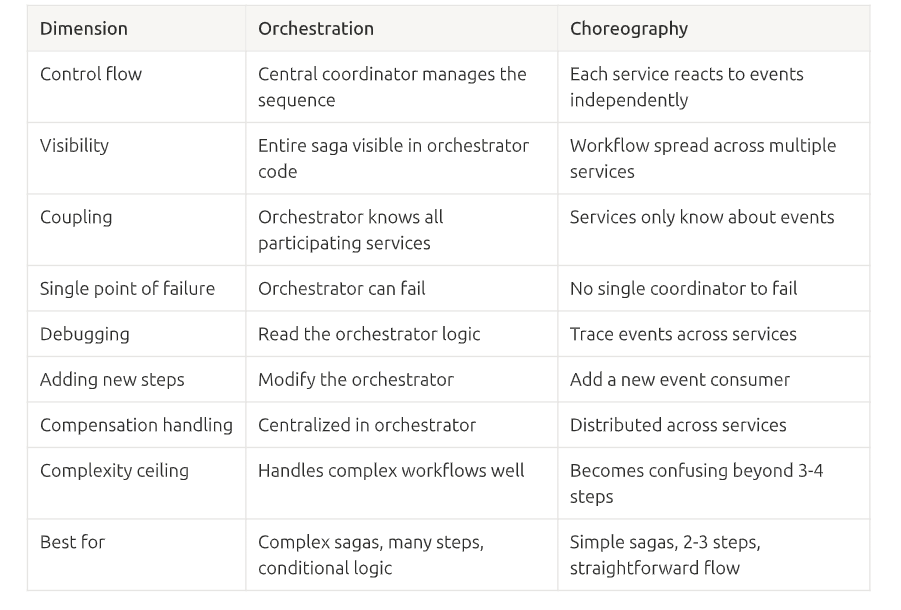
This is the transactional outbox — a reliability pattern that fixes a subtle but deadly bug in event-driven systems. Let me break it down.
The core problem: the "dual write"
When the Order Service does two things —
- insert order into its DB
- publish OrderCreated to the message broker
— these are two separate systems (database + broker), each a separate network operation. You cannot wrap them in one atomic transaction (a DB transaction can't include "publish to Kafka"). So either can fail independently:
| Failure | Result |
|---|---|
| DB insert ✓ but publish ✗ | Lost event — order exists, but nobody knows. Inventory never reserved, payment never authorized → order stuck. |
| Publish ✓ but DB insert ✗ | Phantom event — services start processing an order that doesn't exist. |
Either way → corruption. And in a saga, a lost event means the whole thing stalls.
The insight
You can't make (DB write + broker publish) atomic. But you CAN atomically write two things to the same database in one transaction. So:
Instead of publishing to the broker, write the event into an outbox table in the same DB as the order — in the same transaction.
Now the order insert and the event write commit or roll back together. You can never have an order without its event, or an event without its order. The atomicity problem is gone because it's now a single-database transaction.
The two halves (per your diagram)
1. Atomic write (the "Single transaction" arrow):Order Service ──[ one DB transaction ]──► Order DB
├── orders table (the order)
└── outbox table (the OrderCreated event)
Both committed together. ✅
2. Reliable relay (the async shipper):Message Relay ── reads ──► outbox table
── publishes ──► Message Broker
── marks as sent ──► outbox table
A separate Message Relay (or CDC connector like Debezium, tailing the DB log) reads unsent outbox rows, publishes them to the broker, and marks them sent. If publishing fails, the event stays in the outbox and gets retried → no event is ever lost.
📮 Analogy: the outbox is an outbox tray on your desk. Instead of running to the post office (broker) yourself each time — which might fail — you drop the letter in the tray at the exact moment you file your copy (atomic). Then the mail carrier (relay) picks it up and delivers, retrying if needed. The letter can't be lost — it sits safely in the tray until delivery is confirmed.
The one caveat: at-least-once → need idempotency
The relay guarantees at-least-once delivery — if it crashes after publishing but before marking "sent," it'll republish that event → a duplicate. So consumers must be idempotent (dedupe by event ID). That's exactly what the next slides cover (Inbox pattern / message dedup / idempotency keys).
TL;DR: Writing to your DB and publishing an event are two systems that can't share a transaction → you get lost events or phantom events. The transactional outbox fixes it: write the event to an outbox table in the same DB, same transaction (atomic), then a relay/CDC process reliably ships it to the broker and marks it sent (retrying, so nothing's lost). Trade-off: at-least-once delivery, so consumers must be idempotent. 👍
Want the flip side next — the Inbox pattern / idempotency (Slides 96–97), which is how the consumer handles those duplicate events?
{kind=link}
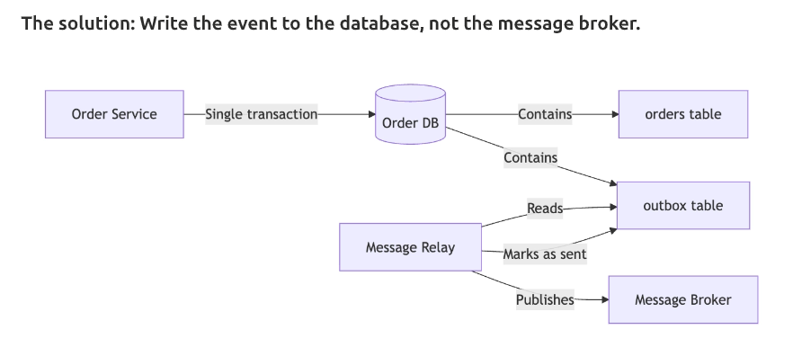
What is the Inbox pattern and Message Deduplication?
The outbox pattern guarantees that each event is published at least once.
But “at least once” means the same event might be delivered to consumer more than once.
The inbox pattern handles this on the consumer side.
Why Duplicates happen?
- The message relay pubishes an event to Kafka but crashes before marking it as sent. On restart, it publishes again.
- Kafka delivers a message to a consumer, but the consumer crashes before committing its offset. Kafka redelivers.
- Network issues cause a retry that results in the broker receiving the same message twice.
The inbox pattern………………….
Each consumer maintains an inbox table that records the ID of every event it has processed.
Before processing an event, the consumer check if the event ID is already in the inbox. If it is, the event has already been processed and is skipped. If it is not, the consumer inserts the event ID into the inbox and processes the event in the same transaction.
How is the inbox table maintained?
Over time, the inbox table grows. Periodically purge entries older than the message broker’s retention period → Kafka retains messages for 7 days , purge inbox entries older than 7 days.
What is idempotency and why is it needed?
“Executing an operation multiple times has the same effect as executing it once.”
It is a very policy used to help in grounding the at-least-once delivery, idempotency is not optional. It is a requirement for correctness.
What can be some naturally idempotent operations?
- Setting a value → “Jhonathan” produce the same result whether run once or five times.
- Deleting a record by ID : “Delete order ord_123” succeeds once and is no-op afterward.
- Reading data: Always idempotent.
What are some operations that are not natuarally idempotent?
- Incrementing a value: “Add $10 to account balance” gives a different result each time.
- Creating a record with auto-generated ID: Each execution creates a new record.
- Sending an email: Each execution sends another email.
Name one example where idempotency is critical for sagas?
Suppose in case of the payment service A ayment is authorized and then fails ?
- This incase is followed by second authorization will lead to double charging.
Why exactly-once is a myth in distributed systems?
The core reason (one sentence)
The broker cannot distinguish "the message was lost" from "the acknowledgment was lost." These two situations look identical to the broker but demand opposite actions — resend vs. don't-resend — so it's forced to risk either loss or duplication. It can never avoid both.
Walk the exact scenario
- Broker delivers message → consumer.
- Consumer processes it. ✅
- Consumer sends ack.
- Ack is lost (network drops it).
- Broker waits, times out, thinks "never delivered" → redelivers.
- Consumer gets it again → duplicate.
What are the three Delivery guarantees?
- At most once:The message is delivered 0 or 1 times.
- At least once: The message is delivered one or more times.
- Effectively once: At-least-once delivery combined with idempotent processing on the consumer side.
What is a DLQ?
A dead-letter queue(DLQ) is a holding area for messages that cannot be processed after multiple retry attempts. Insteads of retrying foreover or silently dropping the message, failed messages are moved to the DLQ for investigation.
When a message goes to the DLQ:
- The consumer has retried 3-5 times.
- The message payload if malformed and cannot be deserialized.
- A bug in the consumer causes a crash every time it encounters this specific message type.
- A downstream dependency is permanently unaviable for this specific request.
What happened to messages in the DLQ?
1. An alert fires notifying the on-call engineer that messages are accumulating in the DLQ.
2. The engineer investigates: is this a bug, a bad message, or a temporary downstream outage?
3. If the issue is fixed, messages are replayed from the DLQ back to the main queue.
4. If the message is genuinely processable, it is logged and archived.
Why DLQs are essential for sagas ?
DLQs ensures this failure is visible and eventually handled, rather than silenetly ignored.
7 Messaging Reliability Patterns
Q: What is the transactional outbox?
A: Write events to the database, not the broker, in the same transaction as the business data. A relay publishes them to the broker later. → guarantees the event and the state change commit together.
Q: What is the inbox pattern?
A: The consumer deduplicates by tracking processed event IDs in a local table — skip anything already seen.
Q: What are idempotency keys?
A: A caller-generated unique key per operation; on a duplicate, the server returns the stored result without re-executing.
Q: What is at-least-once delivery?
A: The default for Kafka, RabbitMQ, SQS. Messages are never lost but may be duplicated.
Q: What is effectively-once?
A: At-least-once delivery + idempotent consumers — the strongest practical guarantee (true exactly-once delivery is impossible).
Q: What is a dead-letter queue?
A: Failed messages go to a DLQ after the retry budget is exhausted → alert and investigate, instead of retrying forever or dropping silently.
Q: What is exponential backoff with jitter?
A: Prevents retry storms — the delay increases exponentially, and jitter (randomness) desynchronizes retries so a recovering service gets a trickle, not a burst.
The capstone: how they all fit together
Q: How does the full reliability chain connect?
A:
- Outbox → ensures events are published.
- At-least-once delivery → ensures events reach consumers.
- Inbox / idempotency → ensures events are processed exactly once.
- DLQ → ensures failures are visible.
- Backoff (with jitter) → ensures retries don't cause cascading failure.
One sentence: published (outbox) → delivered (at-least-once) → processed once (inbox/idempotency) → failures caught (DLQ) → retries made safe (backoff+jitter). That's the end-to-end guarantee that a message-driven saga actually works.
Slides 101–104 as Q&A. 🎴
Partial Failure Handling (Slide 101)
Q: What is partial failure, and why is it unique to distributed systems?
A: Some steps of an operation succeeded and others didn't — leaving the system in an in-between state. A monolith either fully succeeds or fully rolls back (one transaction); microservices can't, so partial failure is the defining challenge.
Q: What are the three response strategies for partial failure?
A:
- Forward recovery (retry & complete) — retry the failed step; if the failure was transient (timeout, temporary unavailability), the saga completes. Try this first — handles most failures.
- Backward recovery (compensate & cancel) — if the step fails permanently (insufficient funds, invalid data), run compensating transactions to undo completed steps → clean cancelled state.
- Best-effort + human intervention — if compensation itself fails (Inventory Service down, can't release stock), log it, alert ops, enter COMPENSATION_FAILED; a human or recovery job fixes it when the service recovers.
Q: How do you choose which strategy?
A: Transient error (timeout, 503) → retry with backoff (forward). Business error (insufficient funds, out of stock) → compensate (backward). Persistent infrastructure error → DLQ + human intervention.
Q: Ideal interview phrasing?
A: "First I retry (most failures are transient). If it's permanent, I run compensating transactions. If compensation fails, the saga enters a stuck state and ops is alerted." Describing failure at multiple levels is the biggest senior-vs-mid differentiator.
State Machines for Service Lifecycles (Slide 102)
Q: What is a state machine here?
A: A definition of every valid state a business entity can be in and every allowed transition between them. It blocks invalid transitions and makes saga behavior predictable and debuggable.
Q: Why do sagas need one? Give the failure it prevents.
A: Without one, an entity can reach an undefined state. E.g., Payment sends PaymentAuthorized for an order already CANCELLED → without a state machine the Order Service overwrites the cancellation → corruption. With a state machine, CANCELLED → PAYMENT_AUTHORIZED isn't defined, so it's rejected.
Q: What does the implementation look like?
A: A VALID_TRANSITIONS map (CREATED → [INVENTORY_RESERVED, CANCELLED], … , CANCELLED → [], DELIVERED → []) plus a transition_order() that raises InvalidStateTransitionError if the new status isn't allowed from the current one. Every change goes through this guard → invalid transitions are rejected and logged, so bugs are visible immediately instead of silently corrupting data.
Q: Why mention it in an interview?
A: Drawing the state machine — including error states like CANCELLED — shows you think about every possible state. A hallmark of production-experienced engineers.
Worked Example — Checkout Saga, Happy Path (Slide 103)
Q: Walk through the happy-path checkout saga (orchestrated, 2 items, $59.98).
A: The Order Orchestrator drives 6 steps:
- Order Service — create order (ord_123) → CREATED
- Inventory Service — reserve 2× prod_789 (res_001) → INVENTORY_RESERVED
- Payment Service — authorize $59.98 (idempotency key ik_abc) → PAYMENT_AUTHORIZED
- Order Service — update status → CONFIRMED
- Shipping Service — create shipment (ship_789) → SHIPPED (pending)
- Notification Service — send confirmation email (async, fire-and-forget) → no state change
Q: What two design details must you call out?
A: ① Every mutating step has an idempotency key (so retries don't double-charge / double-reserve). ② The email is last and asynchronous — you can't unsend an email, and email failure should never block the order.
Worked Example — Checkout Saga, Failure Cases (Slide 104)
Q: Failure Case 1 — inventory reservation fails (out of stock)?
A: Step 1 create order → succeeds (CREATED). Step 2 reserve → fails. Compensation: cancel order → CANCELLED. Customer sees "Sorry, this item is out of stock."
Q: Failure Case 2 — payment fails (insufficient funds)?
A: Steps 1–2 succeed (order created, 2 units reserved). Step 3 authorize → fails (card declined). Compensate in reverse: release inventory (2 units back) → cancel order (CANCELLED). Customer sees "Payment failed. Please try a different payment method."
Q: Failure Case 3 — shipping fails AFTER payment, and why is it handled differently?
A: Steps 1–4 succeed (order CONFIRMED, payment authorized). Step 5 create shipment → fails (provider down). Decision: do NOT cancel/refund — retry shipping with exponential backoff; after 3 retries → DLQ + alert ops. Order stays CONFIRMED; shipment is created when the provider recovers.
Q: The key insight across all three cases?
A: Not every failure triggers full compensation. Full compensation (refund + cancel) is only for when the core operation can't proceed (no stock, no payment). If the customer will still get what they want (shipping just needs retrying), you retry forward, not compensate — the customer wants their order, not a refund.
No matching notes. Try another term.